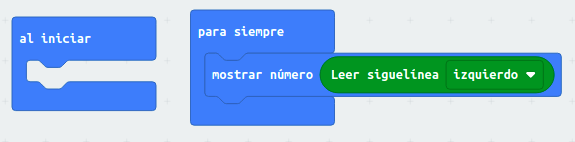

Retos con Maqueen
01 Control de Motores
Tarea
Se trata que el robot haga la siguiente secuencia de movimiento de forma indefinida:
Adelante durante 1 segundo.
Derecha durante 1 segundo.
Izquierda durante 1 segundo.
Atrás durante 1 segundo.
02 Neopixel
El robot maqueen posee cuatro Leds RGB (Red, Green, Blue) en su parte inferior, en realidad son tres leds de colores encapsulados. En ellos puedo realizar una adición de colores luz indicando la intensidad de los tres colores luz para formar el color deseado.
 Modelo aditivo de colores RGB
Modelo aditivo de colores RGB
Existen webs para componer colores muy útiles para conseguir colores RGB concretos: https://htmlcolorcodes.com/es
Tarea 1
Se trata de conseguir que el robot maqueen represente en sus leds RGB colores aleatorios, cambiando el mismo cada segundo.
Tarea 2
Se trata de hacer gradación de colores con los LEDs RGB Neopixel que tiene nuestro robot.
03 leds frontales
Tarea
Este reto consiste en hacer una intermitencia con los dos leds rojos frontales del robot. El tiempo de encendido de cada led es de medio segundo.
04 Distancia con US
Tarea
Este reto consiste en mostrar la distancia a la que están los obstáculos en los leds de micro:bit (matriz de 25 leds).
05 Reconocimiento de teclas mando IR
Tarea
Esta tarea consiste en determinar el valor numérico que tienen las teclas de un mando a distancia cualquiera.
06 maqueen teledirigido con mando IR
Tarea
Este reto consiste en asignar a cuatro teclas de una mando a distancia por infrarrojos (IR), los cuatro movimientos básicos del robot. Cuando se pulsen provocarán respectivamente movimientos como: adelante, atrás, izquierda y derecha por un tiempo.

07 lectura sensor IR de suelo
Tarea
La tarea consiste en visualizar en la pantalla de micro:bit (matriz de 25 leds) el estado de los sensores de infrarrojos de suelo. El sensor dará valor 1 a blanco y 0 a negro.

08 seguidor de líneas
Tarea
El reto consiste en hacer un siguelíneas negras, las líneas del circuito deben ser más anchas que la distancia entre los sensores infrarrojos de suelo del robot.
09 evita-obstáculos
Tarea
El reto consiste en que el robot evite obstáculos que estén a menos de 20 cm del mismo. Además cuando los evita lo hará aleatoriamente a derechas o izquierdas.
10 seguidor de luz
Tarea
El reto consiste en que le robot persiga una fuente luminosa a partir de cierto umbral de luz. Recordamos que el sensor de luz de la micro:bit se encuentra en la matriz de leds.
11 Control remoto desde otra micro:bit con radio
Tarea
Se trata de controlar el robot maqueen con otra micro:bit a través de la radio y con el acelerómetro. Jugando con las aceleraciones en el eje x (izquierda o derecha) controlamos a maqueen con los giros en los mismos sentidos. Modificando las aceleraciones en el eje y (adelante o hacia atrás) controlamos los movimientos del robot en esos sentidos.
Con este reto conseguimos un control remoto de maqueen a través del acelerómetro de otra micro:bit.
Código Micro:bit emisora:

Código Micro:bit receptora:

12 persigue-objetos
Tarea
El reto consiste en que maqueen rastree a derechas o izquierdas (al azar), si hay objetos en un radio menor a 20 cm, si lo encuentra lo persigue.
Retos resueltos
Fichero adjunto
Obra publicada con Licencia Creative Commons Reconocimiento Compartir igual 4.0